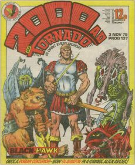
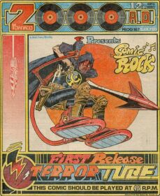
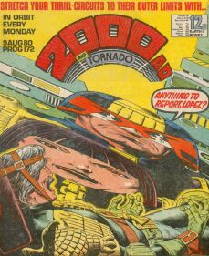
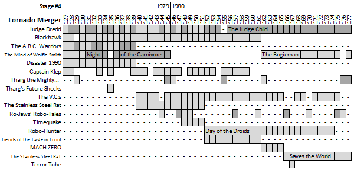
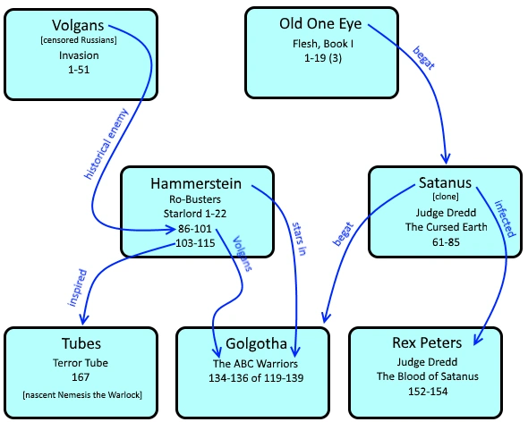

|  |  |  |
| Prog 137 by Massimo Belardinelli | Prog 167 by Kevin O'Neill | Prog 172 by Brian Bolland |
The merger with Tornado (less than a year after the one with Starlord) seems less welcome, when all is said and done. Starlord gifted us with Ro-Busters (spawning The A.B.C. Warriors and becoming a cornerstone of the Millsverse) and Strontium Dog (a thrill that, almost as much as Dredd, defines 2000 AD for many fans). It's a poor comparison that Tornado gives us Blackhawk and The Mind of Wolfie Smith: which isn't to say they're terrible, only that they don't provide the same immediate inspiration and longevity.
And then there's Captain Klep.
This period is vitally interesting, then, in that it seems to have to shake free of the new merger, and as it does so (over 51 progs) we're introduced to some of the most important Dredd world characters ever devised alongside many fresh thrills that are a well-loved part of the 2000 AD canon. Progs 140 & 152 position themselves as jump-ons but the merger doesn't shake loose until the end of Wolfie Smith in prog 177.
Conspicious by its absence, Strontium Dog disappears for a stretch of 59 progs, but don't worry: Tharg has a plan...

Judge Dredd
Sov Judges were first introduced by Wagner (& Bolland) back in prog 50 during The First Lunar Olympics, and in progs 128-129 the Battle of the Black Atlantic sees Dredd and the Sovs cross swords again. We're also introduced to exploding mob blitzers (130), we hear Otto Sump's Sob Story (131-132), witness the effects of Boing, the miracle plastic, at the Palais de Boing (136), start our cravings for Uncle Ump's Umpty Candy (145) and Judge Dredd cancels New Year (146: my first encounter with 2000 AD).
You'd think that would be enough world-building, but then progs 149-151 introduce us to Judge Death and Psi-Judge Anderson. All of this before Dredd goes on the hunt for The Judge Child, a hugely influential epic (giving us Judge Hershey and the Angel Gang) that...
...sprawls into the next stage...
Blackhawk *ADOPTED*
In Tornado this was historical fiction but 2000 AD has aliens beam the hero off Earth so that Blackhawk becomes "Once a Roman centurion - now gladiator in a savage alien arena!" (as the strapline from prog 137 has it). As if that weren't enough, he then gets his soul sucked out (by the aptly monikered Soulsucker) and quests to retrieve it.
Instead of the plot dead-ending it literally disappears down a black hole, but the premise (a Roman warrior in search of his stolen soul) serves as the kernel for Aquila (starting 32 years later in the special Prog 2012). On far shakier footing, the sidekick character Ursa has a song: "My axe he chop with crunching thud, soon he be drinking plenty blood!" Is there where the idea for Slaine came from? A couple of text stories show up in annuals and we get a one-off in the '82 Sci-Fi Special.
The A.B.C. Warriors
Most of the first half of this run (in the previous stage) focussed on back stories for some of the seven titular warriors: a re-designed Hammerstein from Ro-Busters, the beast-like Mongrel, the wizard Deadlock, the cowboy Happy Shrapnel, the sniper Joe Pineapples, the pirate Blackblood and the remains of Steelhorn as The Mess.
Having introduced the warriors, the second half of the sequence is free to have them "Spread the word!" in a collection of Seven Samurai themed adventures as the smaller force defends against the likes of the evil Biol Corporation: perhaps the strongest stories are Cyboons (progs 130-131) and Mad George (137-139).
We have to wait until prog 555 in '88 for the Warriors to return in their own series, but they do crop up prior to that in Nemesis the Warlock (in '84).
The Mind of Wolfie Smith *ADOPTED*
Inherited from Tornado: a young hobo with ESP and preternatural bad luck (in a thematic cross between Tales of the Unexpected and Sapphire and Steel.)
One could argue that "young man has special powers" also results in Luke Kirby, the Books of Magic, Harry Potter and, erm, The Phantom Menace: but Wolfie Smith didn't have legs in 2000 AD and is dropped.
Disaster 1990
A global flood requires that Bill Savage 'ave a word in various ne'er do wells' shell-likes. Sorted!
This prequel to Invasion finishes here but Savage returns in a sequel to Invasion named (appropriately) Savage (starting with 2004's Taking Liberties in prog 1387).
Captain Klep *ADOPTED*
Inherited from Tornado: Captain Klep continues causing comedic chaos. Wearing its silly openly on its sleeve with sub-titles such as "The Case of the Five BANG! Six Dead Taxi Drivers", this fills the slot vacated by Bonjo.
Whilst this doesn't return there's a tenuous argument that it serves as a thematic precursor of sorts for Marshal Law in 1987.
Tharg the Mighty
Alien editor deals with various assaults on thrill power.
More in the next stage....
Tharg's Future Shocks
Usually one-off tales with a twist.
More in the next stage...
The V.C.s *NEW THRILL*
It's 'Nam in space, as the Vacuum Cleaners go up against the bug-eyed alien threat of the Geeks. Vape! Vape! Vape! The gritty ensemble of characters sets this apart from traditional hero-centric tropes: Trooper Smith is our focal point but instead of being the obvious hero, he's a fish out of water - an "Earthworm" to a crew of system-born veterans.
Not only does this return much later (starting in 2002), but the new recruit motif repeats itself in Bad Company ('86).
The Stainless Steel Rat *ADAPTATION*
James Bolivar "Slippery Jim" DiGriz is the titular rat: an interstellar rogue that justifies (non-homicidal) theft on the basis that it's covered by (someone's) insurance. Carlos Ezquerra beautifully realizes this serialized version of Harry Harrison's space operatic novel.
So much fun that it returns later in this stage...
Ro-Jaws' Robo-Tales *NEW THRILL*
The first anthology format to challenge Tharg's Future Shocks: here the gimmick is that each tale features robots [see title]. Gary Rice starts to shoulder writing duties as the series progresses, with memorable titles such as The Revolt of the Tick Tock Monkey Bomb (157) and Droids Are Dispensable (161). Of particular note is prog 170's Killer in the Cab, by Alan Moore: probably his first script for the prog although his A Holiday in Hell (a Westworld homage) had been published earlier in the 1980 Sci-Fi Special.
More tales in the next stage...
Timequake *ADOPTED*
Time-traveling into the Tornado merger from the Starlord merger is typical behavior for the Time Cops, as they stop a final time quake from discombobulating the future.
Having published what was probably still in the drawer, Tharg leaves this one alone.
Robo-Hunter: Day of the Droids
Verdus had Same Slade defeat a planet full of robots and even though we knew he was a Robo-Hunter (a robot bounty hunter in the mould of Sam Spade, the private eye from The Maltese Falcon) we never got to see him on his home turf. Here, he's back in his home city on a case that brings in the robot mafia (the God-Droid) and a plot where, as with Verdus, robots threaten to take over from humans (in this case with the help of the wonderfully cute but terribly threatening Teeny Meks).
Key to the Robo-Hunter mythos are the addition of Sam's idiotic assistant Hoagy and Carlos Sanchez Robo-Stogie (a Cuban cigar determined to help Sam quit smoking). These foils form the comedic backbone of the strip for years to come.
We have to wait a couple of years for Robo-Hunter to return when he emigrates to Brit-Cit in 1982's prog 259.
Fiends of the Eastern Front *NEW THRILL*
Vampires stalk the terrible World War II battlefields where the Germans invaded Russia in their (hubristically titled) Operation Barbarossa.
We have to wait 26 years, but get a second series in the Megazine in 2006.
MACH ZERO
The tale of a British Hulk is put to rest in the four-part The Final Days.
It's all they wrote.
The Stainless Steel Rat Saves the World
The third rat novel (the second serialized by 2000 AD) sees the villainous "He" attempting to wipe out Jim's Special Corps by going back to the Napoleonic era and erasing their timeline. (There's a similar side-plot in a 1985 gamebook: Falcon - The Renegade Lord.)
We have to wait until 1984 for The Stainless Steel Rat for President.
Terror Tube
This bizarre one-off from Mills & O'Neill takes over the cover and introduces Nemesis (an alien freedom fighter unseen within his Blitzspear), Termight, the evil Torquemada and his Terminators. Inspired by earlier tube designs (in Ro-Busters' The Fall & Rise of Ro-Jaws and Hammerstein) this was supposed to be first in a series of "Comic Rock" one-offs but instead serves as the launch pad for what would later become Nemesis the Warlock.
The next stepping stone towards Nemesis is Killer Watt (progs 178-179), and The Galactic Olympics collectible booklet uses an otherwise incongruous terminator/tube cover in prog 174.
Pat Mills enjoys blending characters and stories through time and (because he had his fingers in many creative pies) his Millsverse also ties into the Dreddverse. Sometimes people produce timelines that try to make sense of it all (e.g. in The Judge Dredd RPG by Games Workshop in '85).
First of all, back in Flesh (Book I) we have Old One Eye (a T-rex) that begat (and later killed) Satanus, whose clone shows up in The Cursed Earth. Mills also explores a body horror aspect of this thread in The Blood of Satanus (progs 152-154).
Satanus begat Golgotha, who is taken to Mars and features in The ABC Warriors (134-136), itself a future spin-off of Ro-Busters (the link at this point being just Hammerstein). The Golgotha connection is recognized in the prog as being convoluted so prog 134 features a 1-page Flesh File introduction that explains the Old One Eye - Satanus - Golgotha chain.
Ro-Busters' The Fall and Rise of Ro-Jaws and Hammerstein serves as the inspiration for Terror Tube (the nascent start of Nemesis the Warlock). Earlier in Ro-Busters, during Hammerstein's War Memoirs, we see him fighting the Volgans. They're the enemy (editorially censored Russians) from Invasion and, because they're now part of Hammerstein's history, they also show up in The ABC Warriors back stories (such as The Retreat from Volgow in prog 120).
Diagrammatically, then:
